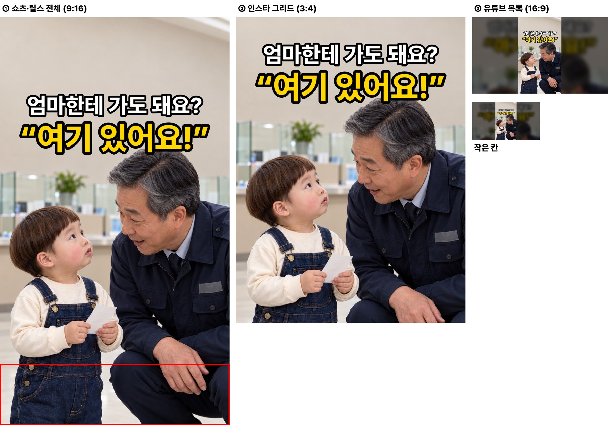
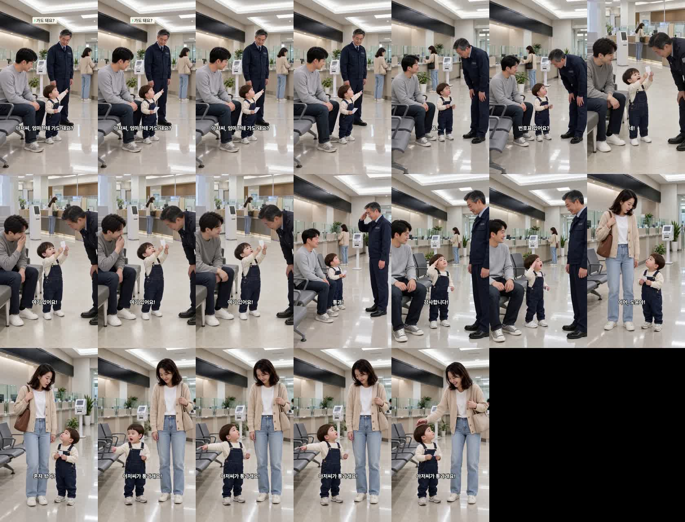

은행에서 청원경찰 아저씨에게 허락받은 두 살이 간 곳 — 고친 판
19.4초 · 7컷 · 엄마는 창구, 도윤이는 아빠와 대기(대표님 «엄마를 창구에 두고 아빠랑 기다리는 판으로») · 아직 업로드 대기열에 올리지 않았습니다
봐 주셔야 할 것
- 상황 — 엄마가 뒤쪽 창구에 있어 «엄마한테 가도 돼요?»를 묻는 이유가 서는지. 끝은 도윤이 «아저씨가 통과래요!».
- 엄마 가방 — 6컷은 갈색, 7컷은 베이지로 색이 다릅니다. 눈에 띄는지.
- 1컷 목소리 — 공손한 질문이라 도윤 음높이 308Hz(경고선 330 아래).
- 썸네일 — 청원경찰 아저씨·도윤이 투샷 · 흰 줄 «엄마한테 가도 돼요?» · 노란 줄 «여기 있어요!».
대사 · 실측
| 컷 | 누가 | 대사 | 받아쓰기 | 음높이 |
|---|---|---|---|---|
| 1 | 도윤이 | 아저씨, 엄마한테 가도 돼요? | 아저씨 엄마한테 가도 돼요? | 308Hz |
| 2 | 청원경찰 | 음… 번호표 있어요? | 음... 번호표 있어요? | 133Hz |
| 3 | 도윤이 | 네! 여기 있어요! | 네! 여기 있어요! | 364Hz |
| 4 | 청원경찰 | 통과! | 통과 | 234Hz |
| 5 | 도윤이 | 감사합니다! | 감사합니다. | 348Hz |
| 6 | 엄마 | 어머, 도윤아! 혼자 왔어? | 어머 도윤아 혼자 왔어? | 340Hz |
| 7 | 도윤이 | 아저씨가 통과래요! | 아저씨가 통과래요 | 348Hz |
썸네일

기계 검사 · 배운 것
- D0~D8 · 시작 그림 이탈 · 컷 안 장면 튐 검사 통과 · 컷마다 한 사람만 말함 · 받아쓰기 대본과 같음 · 도윤 키 엄마의 약 0.53배(24개월 기준)
- 7컷이 6.6초일 때 세 번 연속 다른 장면으로 바뀜 → 4.5초로 줄이자 한 번에 통과. 오늘 튄 컷 대부분이 6.6초 마지막 컷이라, 다음 편부터 마지막 컷도 4.5초로 잡습니다.
1초 간격 프레임
